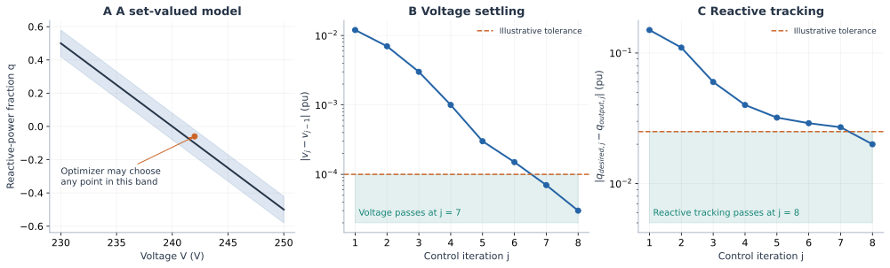

Tolerance bands, control convergence and solver choice
A useful model must specify both which behavior is permitted and how the computed result is assessed. Smoothing error, a firmware deadband, a control-loop stopping tolerance and an NLP feasibility tolerance have different meanings. Making their units comparable does not make them interchangeable.
What OpenDSS tolerances actually check
EPRI distinguishes functions that control reactive power from functions that limit active power. This is consistent with representing volt-var as tracking and volt-watt as a cap, although capability allocation and other control modes must still be considered. See the InvControl model description.
| Property | Quantity assessed or adjusted | Modeling implication |
|---|---|---|
VarChangeTolerance | Desired reactive output versus actual reactive output in the same control iteration, in the relevant per-unit reactive base | A residual-like stopping criterion; the desired value is the processed control target |
VoltageChangeTolerance | Monitored per-unit voltage change between consecutive control iterations | An iteration settling criterion, not a static voltage-error band |
ActivePChangeTolerance | Desired active-power limit versus the limit produced by the convergence process | Agreement of limits; output power may legitimately be below the limit |
DeltaQ_Factor, DeltaP_Factor | Update steps in the control iteration | Affect convergence behavior; are not permitted curve-error magnitudes |
RefReactivePower | Provided/absorbed reactive-power normalization | Distinguish fixed maximum-var bases from available-var bases |
RateOfChangeMode, LPFTau, RiseFallLimit | Time-step filtering or ramping behavior | Introduce temporal behavior distinct from inner control-loop convergence |
The first, fourth and fifth rows are described by EPRI's reactive-control properties; active-limit convergence by its active-power properties; voltage settling and temporal settings by its common properties. The DSS-Extensions property reference also documents hysteresis and voltage-reference choices. Check the deployed engine/version and set experiment values explicitly: generated default tables and prose can disagree, for example for VoltageChangeTolerance. We do not infer a firmware model from default settings alone.
EPRI's control-action criteria explain why the raw volt-var curve is not always the target in the residual: capabilities, control combinations and processing matter; provided/absorbed normalization can differ and use prior-iteration bases. The active-power check compares limits, not actual dispatched watts. Convergence also includes voltage settling and the absence of further queued control actions. A static constraint on the raw curve cannot reproduce all of this behavior.
A band is a useful abstraction—with explicit assumptions
For fixed bases and a memoryless target, define the residual r(Q,V)=Q-Qtarget(V). A two-sided band is
\[-\tau_Q\leq r(Q,V)\leq\tau_Q, \qquad\text{equivalently}\qquad Q=Q_{target}(V)+e,\quad |e|\leq\tau_Q.\]
If fᴠᴠ denotes a residual, “fᴠᴠ + tolerance = 0” can express this only if “tolerance” is a bounded signed variable. Adding a fixed positive number shifts a curve; it does not create a band. If fᴠᴠ(V) denotes the target output itself, the equation must also include Q.
A residual band can be an intentional model of allowable tracking discrepancy, an uncertainty set, or a diagnostic acceptance test. Specify which. Putting the band inside an optimizer lets the optimizer select a favorable error. It is then a set-valued control model, not faithful reproduction of a deterministic control iteration. Robust claims require the appropriate quantifier over that set; existence of a favorable error does not establish safety for every admissible error. Hysteresis and temporal filters need state, not a wider static band.

Panel A uses a visually enlarged band of 0.08 pu; the executable example below uses 0.025 pu. The iteration sequences are illustrative, not an OpenDSS simulation. They show voltage settling passing at iteration 7 while reactive tracking passes at iteration 8. A small change between successive iterates alone is not proof of agreement with the intended curve or a unique equilibrium.
The relation API can express an intentional band without treating it as a solver option. Here the target is affine on the declared domain, so both sides lower exactly to linear inequalities:
using PowerOptLab,JuMP,Ipopt
qcurve=PWLFunction([230.,250.],[.5,-.5];input_unit=:V,output_unit=:pu)
tau_q=.025
m=Model(Ipopt.Optimizer); set_silent(m)
@variable(m,235<=V<=245,start=242.)
@variable(m,q)
@constraint(m,V==242.)
# q - tau <= f(V) and q + tau >= f(V).
upper=formulate_pwl_relation!(m,qcurve,V,q-tau_q;relation=:upper)
lower=formulate_pwl_relation!(m,qcurve,V,q+tau_q;relation=:lower)
@objective(m,Max,q)
optimize!(m)
@assert is_solved_and_feasible(m)
@assert isapprox(value(q),-.075;atol=1e-6)
(value(q),primitive_value(qcurve,242.),tau_q)(-0.07499988231990007, -0.09999999999999998, 0.025)The canonical target is -0.1; optimization deliberately chooses the band edge -0.075. Neither smoothing nor a solver failure caused this difference. The output passed to each relation audit includes its signed band shift; report q-f(V) separately when studying the physical tracking residual.
Translate physical budgets without conflating them
With a fixed 10 kvar base, a chosen per-unit reactive tolerance of 0.025 corresponds to 250 var. With a 230 V voltage base, 1e-4 pu corresponds to 0.023 V between iterations. These are illustrative settings; an available-var base or asymmetric absorption/injection ratings changes the translation.
Let |fε(V)-f(V)| ≤ εQ and let the candidate satisfy |Q-fε(V)| ≤ ηQ in physical var. Then
\[|Q-f(V)|\leq\eta_Q+\epsilon_Q.\]
If the target was evaluated at a different voltage Ṽ, and f is Lipschitz with constant LQ on the relevant domain, add LQ |Ṽ-V|. A measured iteration change may support that comparison of successive targets under fixed settings; it is not automatically a bound on voltage measurement error or the distance to an unknown equilibrium. These inequalities are elementary residual accounting, not OpenDSS acceptance-policy equivalents.
Qbase=10_000. # var
slope=Qbase*.05 # var/V on this segment
smoothing_budget=25. # var
solver_residual=2. # independently audited physical var
lagged_voltage_difference=230.0 * 1e-4 # V
bound=smoothing_budget+solver_residual+slope*lagged_voltage_difference
@assert isapprox(bound,38.5)
(bound_var=bound,illustrative_tracking_tolerance_var=Qbase*.025)(bound_var = 38.5, illustrative_tracking_tolerance_var = 250.0)This leaves room below 250 var under the stated assumptions. It says nothing by itself about voltage security, hardware capability or nonlinear equilibrium distance. If an inequality surrogate can overestimate a cap by ε, a simple conservative construction is p ≤ fε(V)-ε; positive solver residual allowance must also be deducted or independently audited. A signed tighter bound can reduce this margin. Near a zero-output cap, an overly conservative smooth margin can conflict with p ≥ 0; compact exact tails or an exact bound formulation can avoid that artificial infeasibility. Do not automatically clip a smooth margin without assessing the changed feasible set.
Smoothing theory motivates explicit approximation parameters and residual analysis, not an identification of those parameters with stopping tolerances. See Chen and Mangasarian's smoothing functions and Chen's nonconvex smoothing review. The physical error tutorial develops derivative bounds and local equilibrium-response estimates with their additional assumptions.
Iteration stability is not the same as solvability
A scalar linearized illustration makes this concrete. Let the network map be V=Vs+κQ with κ>0 and the local droop slope be f′=-a, a>0. Direct target iteration has derivative -κa, and can oscillate and diverge when κa>1. Yet the simultaneous residual Q-f(Vs+κQ) has derivative 1+κa>0: the affine problem has a unique root. For κa=2, the iteration multiplier is -2; a relaxed update with gain α has multiplier 1-3α, which is contractive for 0<α<2/3. This is our analytic illustration, not a reconstruction of OpenDSS's update algorithm. It explains why difficulty with an external control iteration need not imply that the simultaneous optimization equations are unsolvable. Smoothing introduces another choice; it is not a substitute for checking either iteration stability or nonlinear-model conditioning.
Match the whole mathematical model to the solver
| Overall model after lowering | Suitable solver class | What the result can establish |
|---|---|---|
| Linear continuous model with polyhedral caps | LP solver | Global optimality of the posed LP, subject to solver tolerances and verified status |
| Convex continuous quadratic, conic or nonlinear model | A solver supporting that convex class | Convexity supports global interpretation of an optimum; numerical residuals and status still require assessment |
| Otherwise linear model with existing integer decisions and exact PWL graphs | MILP solver, e.g. HiGHS with PiecewiseLinearOpt formulations | Incumbent plus valid bounds/gap when reported; scalability depends on formulation strength and branching |
| Convex conic constraints plus integers | A solver supporting the resulting mixed-integer convex class | Appropriate bounds/gaps when the formulation and solver support them; a MILP solver alone is insufficient for arbitrary cones |
| Smooth nonconvex AC equations, continuous decisions | Local NLP solver, e.g. Ipopt or MadNLP | A local candidate and termination diagnostics; no general global-optimality or convergence guarantee |
| Nonconvex equations with complementarity | MPCC-capable method, e.g. CCOpt with its external relaxation/homotopy | Candidate, complementarity residuals and method-specific stationarity information; not automatically a certified exact MPCC point |
| Nonconvex AC equations plus integer graph/device choices | A suitable nonconvex MINLP strategy | Local heuristics or global bounds depending on the method; requires explicit assessment of backend capabilities and relaxations |
Ipopt explicitly targets local solutions of smooth problems, including nonconvex ones; see its official documentation. MadNLP provides a sparse interior-point NLP route, while CCOpt targets MPCC structure. These NLP routes and the present CCOpt integration do not enforce integer decisions. Their flexibility fits nonconvex continuous OPF, but does not remove constraint degeneracy, ill-conditioning, start sensitivity or local minima. The benchmark literature on nonlinear complementarity-constrained optimization explains why ordinary NLP constraint qualifications and stationarity conclusions need care for MPCCs.
HiGHS supports LP/MIP and convex QP; it is not a general nonconvex AC NLP solver. PiecewiseLinearOpt constructs formulations; it does not solve the surrounding model or turn AC equalities into linear physics. Its underlying formulation research motivates small, strong graph encodings, particularly when integer decisions already exist. For nonconvex MINLP, even a branch-and-bound interface backed by local NLP solves must not be mistaken for a global certificate: the Bonmin documentation explicitly discusses the limits of nonconvex node bounds and outer approximations.
The practical choice is model complexity together with a compatible, scalable solver. A more detailed AC model may justify a local NLP approach; a planning model with discrete devices and justified linear/convex network approximations may favor MILP/MICP. Replacing a control graph by a hull changes the model; replacing AC physics by a relaxation changes it again. Audit those changes separately from the solver outcome. The existing runner records these outcomes without promoting approximate candidates or adding local continuation methods.
The conservative relation tutorial implements signed-error tightening and demonstrates its possible conflict with a nonnegative power bound at a zero cap.
Suggested learning and experiment paths
- Power engineers: start with the cap/equality geometry and the units of tolerances; then replay candidate controls and check hardware/network residuals.
- PhD candidates: derive the bounded cap and signed error bounds; compare domains and encodings using the executable examples, then introduce feedback.
- OR researchers: inspect relation plans, convexity certificates of scalar restrictions, lifted graph projections, integer structure and full-model nonconvexities before designing performance comparisons. Here “certificate” concerns slope ordering of a scalar curve, not formal verification of the emitted floating-point model or certification of solver output.
The four supplied diagrams cover locality/curvature, feasible-set geometry, contextual lowering and stopping-versus-model tolerances. Useful experimental comparisons are relaxation gap versus bound width, build/solve cost versus device count, and physical error versus smoothing width across starts. Generate these from recorded experiments; a schematic should not pretend to establish a numerical winner.